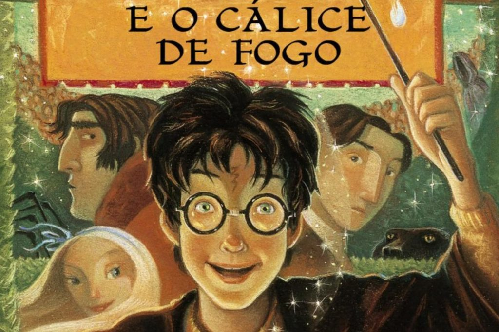

Flaviane Moura
Conhecendo-me um pouco mais
Meu nome é Flaviane Moura atualmente estou cursando Ciência da Computação na Universidade Federal de Alfenas.
Leitura
Se tem uma coisa que amo fazer é ler. Desde pequena eu sempre tive esse interesse, começando por gibis,
aos quais li todos que pude pegar na biblioteca da escola, assim como todos que colecionei ao longo do tempo.
Com o passar dos anos, os gibis já era rasos demais para minha sede de leitura, então minha mãe apresentou-me
aos livros. A primeira saga que li foi Harry Potter, e como todo jovem leitor, achei fascinante aquele mundo,
virando noites e noites devorando cada página, curiosa para saber mais sobre o mundo fantástico dos livros.

- Leituras preferidas:
- Harry Potter
- Os pilares da terra
- Dragões de Éter
- Senhor dos Anéis
- Drácula
“É preciso haver sempre um livro para ler para nos salvar a vida”
Musica
Se existe algo que todo mundo gosta: é música. Óbvio que comigo não seria diferente. Eu me considero uma
pessoa eclética: gosto de tudo um pouco. De música clássica a um rock bem pesado, pode apostar que você vai
encontrar uma dessas na minha playlist aleatória.
"Sem a música, a vida seria um erro"
Filmes, séries e jogos
Como qualquer um que nasceu na década de 90, o ponto alto da infância era ir com os amigos jogar nas lan houses,
fosse na época dos video-games, fosse na época dos PCs. Não posso deixar de mencionar o jogo que marcou geração,
o famoso Counter-Strike 1.6. Devo confessar que eu gosto muito de jogos FPS devido a ele.

Ao envelhecer percebi meu interesse pela filmografia crescer, mesmo enjoando dos clássicos da Sessão da Tarde,
a época dos DVDs foi o estopim para minha paixão por filmes surgir. O que era um pequeno CD para a juventude de
hoje em dia, para mim era uma fuga da realidade, onde eu podia conviver com fadas, elfos, assassinos, motoqueiros,
um pequeno leão em busca do Hakuna Matata ou até mesmo esponjas do mar (vocês estão prontas crianças??).
Claramente, quem não passou a amar assistir uma seriezinha desde que surgiu o lançamento de streamings? Atualmente,
como a maioria das pessoas, estou acompanhando duas séries, sendo elas:
Esportes
Não posso esquecer de mais um interesse que eu amo, dependendo do resultado, até mesmo odeio. Estou falando dos esportes.
Não só amo assistir como também adoro praticar; Seja pra uma peladinha de futebol, um volêi, handball, basquete ou até
mesmo badminton, pode me chamar que eu vou.
Como todo bom brasileiro, eu também tenho um time que mora dentro do meu coração: Cruzeiro, Cruzeiro querido, tão combatido
jamais vencido. Sim, eu sou cruzeirense, ás vezes fanática, ás vezes tranquila. Dependerá muito do dia.
Mas nem só de futebol eu vivo, assim como acompanho no futebol, também acompanho no vôlei, o maior campeão brasileiro:
Sada Cruzeiro. Se você gosta de vôlei e não viu o Sada jogar ainda, veja. O mais lindo volêi já visto.
Dito isso, também assisto NFL e NHL. São dois esportes e ligas que me fascinam, então também passei a acompanhar 2 times
(1 de cada liga) ferozmente, tornando-me de fato uma perfeita torcedora. Enquanto nos campos de futebol eu torço para os
Packers, nas quadras geladas eu acompanho os Canadiens. Infelizmente ainda não vi eles ganharem uma Stanley Cup, passamos
tão perto em 2021. A esperança é a última que morre, não? Já os Packers me trouxeram alegria em 2010, quando ganharam o
Super Bowl, tendo como oponente os Steelers.
Agora, claro que não podia faltar a NBA, onde o mais novo campeão acaba de draftar um jogador brasileiro: é isso mesmo,
eu torço para os Warriors, comandado por Klay Thompson e Stephen Curry.
Interesses Pessoais
Computação Forense
Meu primeiro interesse pessoal é sobre minha vida profissional. Desde uma palestra que teve na Semana Acadêmica de
Ciência da Computação em 2017, no meu primeiro ano de faculdade, eu encontrei o assunto que mais interessou: Computação
Forense. Então, meu plano para minha vida profissional é esse. Formar e então me preparar para o concurso da Polícia
Federal, na qual pretendo trabalhar como perita forense.
Viajar
Coloquei como interesse porque, infelizmente, ainda não tive muito tempo de conhecer muitos locais. Então, meus planos
são aproveitar cada minuto de folga para conhecer os diversos locais desse Brasil, pra só então conhecer o resto do mundo.
Médicos sem Fronteiras
Médicos sem Fronteiras é uma organização internacional, não governamental e sem fins lucrativos que oferece ajuda médica
e humanitária a populações em situações de emergência, em casos como conflitos armados, catástrofes, epidemias, fome e
exclusão social.
Eu vejo o mundo da seguinte forma: retribuir com bondade. Então, minha forma de agradecer cada conquista que consegui, é
me inscrever no Médicos sem Fronteiras quando estiver mais velha. Quero ter a chance de ajudar alguém, fazer o bem para
alguém.